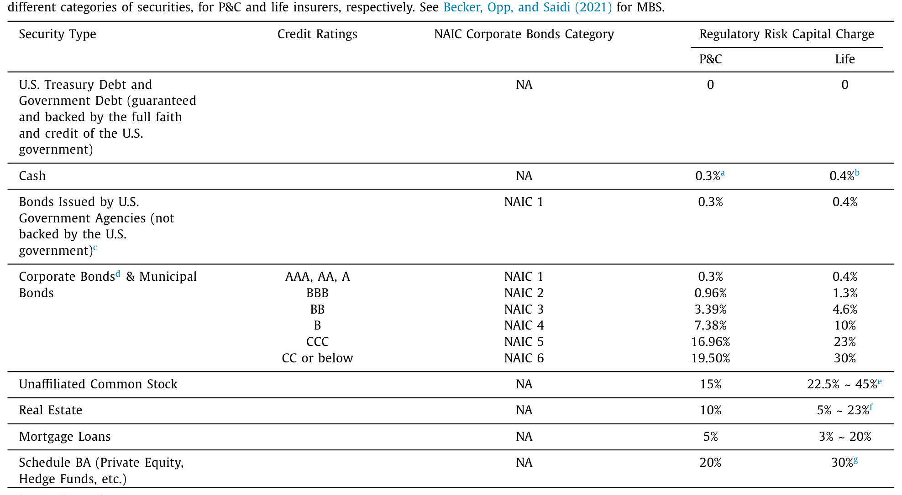
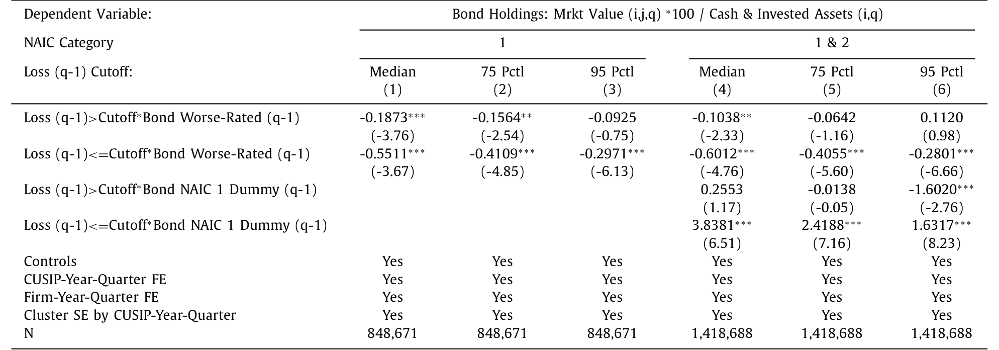
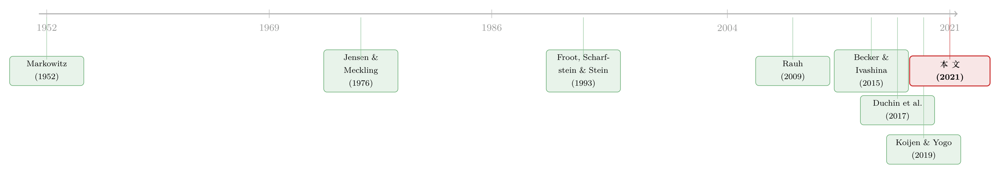

财务状况会替机构投资者「做决定」吗？——来自保险公司的证据
本文读的是 Ge & Weisbach (2021, Journal of Financial Economics)：当财险公司因经营亏损而财务状况收紧时，它们会把公司债组合系统性地向「更安全」的券倾斜——用天气灾害作工具变量后这一效应仍然成立，且并非监管逼出来的。换句话说，对机构投资者而言，「风险管理」战胜了「赌一把翻身」的冲动。
1 引言：当「投资者」不再是个人
现代投资组合理论的起点，是 Markowitz（1952）那个朴素而深刻的想法：厌恶风险的投资者，要为承担风险索取一份溢价；一个组合的风险水平，取决于投资者本人有多厌恶风险。这个框架天然是为个人写的——经验证据也确实表明，个人投资者总体上是风险厌恶的。
可问题在于，今天的金融市场早已不是 Markowitz 写下那篇论文时的样子。绝大多数金融资产，如今握在机构投资者手里，而不是个人。养老金、捐赠基金、基金会、保险公司——单是这四类机构，2017 年底在美国就持有超过 22 万亿美元的资产。它们的组合选择，足以左右整个经济中风险的价格，也会让不同公司的融资成本天差地别。
于是一个尴尬却根本的问题浮出水面：一家机构，并不像个人那样拥有「偏好」。那它究竟凭什么在风险与收益之间权衡？是什么在驱动它的组合选择？
这正是本文要回答的问题。作者给出的答案，简单却有力：财务状况（financial conditions）。一家依赖投资收益来维持运营的机构，必须时刻提防一种可能——它会出现现金缺口，被迫卖出投资。如果手里的资产又险又不流动，应付这种冲击就更吃力；而越是融资成本高、越接近资不抵债的机构，就越有理由偏好一个安全、流动的组合。
2 两种理论的对决：风险管理 vs 赌一把
但事情没那么简单。一个自然的问题是：财务状况恶化，到底会把机构推向更安全，还是更冒险？
这里站着两支针锋相对的理论。
一支是「风险管理（risk-management）」理论——Smith & Stulz（1985）、Froot, Scharfstein & Stein（1993）、Almeida et al.（2011）——它的逻辑是：当外部融资变得昂贵，一家公司在财务吃紧时就更怕「青黄不接」，因此应当主动降低组合风险，避免在最糟的时候还要被迫高价融资。财务越糟，越要保命。
另一支是 Jensen & Meckling（1976）著名的「风险转移（risk-shifting）」论：当一家公司滑向破产边缘，股东其实是在拿债权人的钱赌——赢了归自己，输了反正已经资不抵债。于是濒死的机构反而会加大冒险、去搏一个翻身的机会。财务越糟，越要梭哈。
两种理论指向完全相反的预测。哪一个更贴近真实的机构行为？这不是靠思辨能定的，得让数据说话。
3 识别策略：天气，如何成了财务状况的「手术刀」
要回答这个问题，最大的障碍是内生性。亏损的公司和它的组合选择，可能同时被某个看不见的因素（比如管理层质量）驱动——那样的话，「亏损之后变保守」就只是相关，而非因果。
本文的精彩之处，恰恰在于它用两把刀切开了这个结。
第一把刀：在「同一类券」内部比较。 保险公司是受监管的，监管的核心抓手是风险资本比率（risk-based capital ratio, RBC ratio），可以粗略理解为「账面权益 ÷ 所需资本」。关键在于，每一只证券都会按其风险，给分母里的「所需资本」添上一笔，添多少由该券的风险系数（risk charge）决定。这个机制可以写成：
如表 1 所示，越险的券，风险系数越高：美国国债是 0，BBB 级公司债（NAIC 2）是 0.96%，B 级（NAIC 4）跳到 7.38%，CCC（NAIC 5）更高达 16.96%。正因为不同资产大类的监管待遇天差地别，作者只盯住公司债做文章——在公司债内部，他们可以控制住风险系数，从而把「监管压力」从「自愿选择」里剥离出来。这一刀切得很干净：你看到的组合调整，不是因为这只券的资本占用变了，而是因为公司想这么配。

Table 1
第二把刀：用天气灾害当工具变量。 作者把财险公司的承保亏损（underwriting loss）当作财务状况恶化的冲击：
$$Loss = \frac{|\,\text{net underwriting gain}\,|}{\text{lagged assets}}\quad(\text{当净承保收益为负，否则取 }0)$$
但亏损本身也可能内生。于是作者沿用 Ge（2021）的做法，构造了一个工具变量：把州—季度层面的「异常天气损失（Unusual Weather Damages，即实际天气损失减去 1960 年以来同季度的历史均值）」，乘以保险公司在各州的滞后市场份额，再加总、用滞后资产标准化：
$$IV_{i,q} = \frac{\sum_{s}\left(Unusual\ Weather\ Damages_{s,q}\times Lag\ Mkt\ Share_{i,s,q}\right)}{lagged\ assets_{i,q}}$$
直觉是：飓风、野火、龙卷风这些天灾几乎不可能与一家保险公司的金融投资直接相关，却能实实在在地恶化它的财务状况——增加它对现金的需求、推高它资不抵债的概率。排他性约束（exclusion restriction）的前提也讲得很明白：异常天气损失应与公司的滞后市场份额无关、与影响投资决策的遗漏变量无关，且天气损失是平稳的（期望为零）。这就给「财务状况 → 组合选择」这条因果链，提供了一个外生的撬动点。
4 数据
作者评估了 2,926 家美国保险公司在 2001—2015 年间的组合决策。底层财务数据来自 NAIC 与 SNL Financial，覆盖 2,084 家财险（P&C）和 842 家寿险公司、时间跨度 1996—2015；财务强度评级来自 A.M. Best（2004—2013）。保险公司是不折不扣的「巨鲸」：2017 年持有 $6.5 万亿美元金融资产，其中超过四分之一的美国公司债在它们手里。更妙的是，保险公司要逐券（CUSIP 级）申报持仓，研究者因此能直接观察到每一只券的风险与流动性——这是研究机构组合行为难得的高清数据。
5 主要结果：保命，而不是梭哈
结论清晰地站在「风险管理」一边。
首先，在控制住监管待遇之后，财险公司在经营亏损之后会减持更高风险的公司债——这个发现在用天气数据做工具变量后依然成立，说明它很可能是因果的。接着，作者发现亏损之后，保险公司更倾向于买入相对更安全、更流动的券。这个「转向安全」的效应不是一闪而过：它在持仓里大约持续七个季度才消退。
然后，一个更能区分机制的检验来了。 如果转向安全真的源于「财务灵活性」的担忧，那么财务越容易被意外亏损打垮的公司，反应就该越剧烈。数据印证了这一点：当公司更小、评级更差，以及在 2008 年金融危机期间，同样一笔亏损会带来更大的安全资产配置上升（表 6 用样条设定进一步刻画了这种异质性）。这正是「财务约束被加剧时，机构向安全靠拢」的直接证据。

Table 6: estimates a spline specification by splitting the
横截面上的「程式化事实」也与这个故事吻合：更大的保险公司，作为总组合的比例，持有更少的现金和政府债、更多的 MBS 和公司债——因为它们的承保业务更分散、运营风险更低，于是有余力在金融组合里多担一点风险。换个角度，这也意味着：在没有财务约束顾虑时，保险公司本是想通过承担风险与不流动性去博取更高预期收益的。约束的代价，就是它们不得不放弃这部分超额收益，去换取更安全、更流动的组合。
6 是「自愿」，还是被监管逼的？
但真正关键的一步，是堵住一个最致命的质疑：保险公司是受监管的，亏损后转向安全，会不会只是监管者在背后施压？
作者用了三组反证。其一，如果是监管驱动，那越接近监管资本下限、越容易招来监管者审视的公司，亏损后应该转得越凶——但数据显示，它们并没有比离下限更远的公司转得更多。其二，即便资本比率已经跌破监管下限，这些公司仍然在买入评级低于 A− 的债券，说明它们在 A− 及以上的券里几乎不受监管约束。其三，把样本限制在评级 A− 及以上的券（监管基本不干预的区域），结论照样成立。
于是反转落定：保险公司「亏损后转向安全」，至少有一部分是自愿的选择，而非纯粹的监管后果。当然，作者也诚实地提醒：保险公司毕竟是受监管的实体，其他类型的机构投资者未必会这样行事。
7 文献脉络
把这篇论文放回它所在的谱系，会看得更清楚。
源头是 Markowitz（1952）——风险与收益的权衡，最初是为个人的风险偏好写的。而当代理冲突进入视野，Jensen & Meckling（1976）提出了「风险转移」的可能；几乎同时，Smith & Stulz（1985）、Froot, Scharfstein & Stein（1993）则从「外部融资成本」出发，论证了「风险管理」的需求——两条线索由此分叉，争论一直延续至今。

到了实证时代，Rauh（2009）发现资金不足或评级差的养老金计划会多持安全资产；Duchin et al.（2017）则发现非金融企业越受约束、组合越安全。本文与这两篇一脉相承，却在两点上更进一步：一是用天气冲击识别出了因果，二是借助逐券数据，能在同一资产大类内部分离出「风险」与「监管」「流动性」的影响——这正是 Rauh 和 Duchin 等跨大类比较所做不到的。
它还与另外几条线索对话。Becker & Ivashina（2015）记录了保险公司在 2008 年危机中收敛了「逐收益（reaching for yield）」，与本文「越受约束越保守」的结论彼此呼应；He & Krishnamurthy（2013）的中介资产定价模型预言「资产价值下跌→中介风险容忍度下降→调整组合」，本文则提供了这一机制广泛存在的微观证据。而对 Koijen & Yogo（2019）的需求体系而言，本文等于点出了一个此前被忽略的状态变量：机构的财务状况，本身就在塑造它对不同资产的需求。（关于「谁持有一只债券会反过来决定它的价格」，可参见《谁在持有这张债券，决定了它的价格》；关于企业为何主动在资产负债表上持有风险金融资产，可参见《把风险揣进兜里》。）
8 评论与延伸（Q&A + 研究方向）
(a) 几个可能的疑问
Q：「风险管理」和「风险转移」到底差在哪，凭什么这篇站前者？
二者的分歧在财务恶化时的方向：风险管理说「越糟越保守」（怕融资断档），风险转移说「越糟越激进」（拿债权人的钱赌翻身）。本文的核心证据——亏损后减持高风险券、且在小公司/差评级/危机期更明显——方向上只与风险管理一致，所以站前者。但作者也强调这是保险公司的结论，未必能推广到所有机构。
Q：用天气当工具变量，排他性可信吗？
相对可信。飓风、野火很难说会直接影响一家保险公司买哪只债券，却能切实恶化其财务（赔付激增、现金吃紧）。隐患在第二条假设：异常天气是否与「影响投资的遗漏变量」无关。若某些州既多灾、当地保险公司又恰好有某种投资习惯，份额加权后仍可能残留偏误——这也是为什么作者要用滞后市场份额、并把损失相对历史均值「去趋势」。
Q：在公司债内部比较、控制风险系数，到底解决了什么？
它把「监管资本占用」这个混杂因素摁住了。跨资产大类比较时，你分不清「转向国债」是因为想更安全，还是因为国债的资本占用是 0；而在公司债内部，风险系数可控，剩下的组合调整更接近「自愿的风险偏好变化」。
Q：既然受监管，结果会不会只是监管逼的？
这是全文最要命的质疑，作者用三招回应：越接近监管下限的公司并没转得更凶；跌破下限仍在买 A− 以下的券；只看 A− 及以上（监管基本不管）结论照旧。综合看，转向安全至少部分是自愿的。
Q：这个结论能外推到养老金、共同基金吗？
谨慎乐观。Rauh（2009，养老金）、Duchin et al.（2017，企业）都指向同一方向，说明「约束→保守」有一定普适性。但保险公司有独特的监管与负债结构，且本文识别依赖财险特有的天气冲击；换一类机构，既缺这把外生的刀，行为也可能不同。
Q：它和「逐收益（reaching for yield）」是矛盾还是互补？
互补。Becker & Ivashina（2015）发现保险公司平时会逐收益、但在危机中收敛。本文等于给出了「为什么收敛」的财务状况机制：约束一旦加剧，风险管理的动机就压过了逐收益的冲动。
(b) 几个可能的研究问题与提案
1. 外资持有人在母国受冲击时，会不会抛售美国公司债转向安全券？ 【经济故事】本文证明了「本国财务冲击→转向安全」。若一家外资保险公司或外资机构在其母国遭遇灾害/危机冲击，它会不会被迫调整其美国公司债持仓、并放大对安全券的需求？这把「财务状况渠道」接到了跨境资本流动上。 【可行性】中。NAIC 持仓可识别外资附属机构，母国可用本国灾害/宏观冲击作工具；难点在干净地剥离母国监管与汇率因素。
2. 当大量保险公司同时遇险并减持风险券，是否压低这些券的价格、抬高利差？ 【经济故事】本文停在「需求侧」行为，但若众多保险公司因共同冲击同时抛售 riskier 券，就可能形成 fire-sale，反过来影响公司债定价与流动性。这把微观组合行为接到了价格后果上。 【可行性】高。NAIC 逐券持仓 + TRACE 成交，可在 CUSIP 层面把「保险公司净抛压」与利差、流动性变化对齐；天气冲击仍可作外生变异源。（这条线与《基金越难脱手，它手里的债券越「抖」》的脆弱性思路相通。）
3. 寿险 vs 财险：找一个能冲击寿险的外生变量。 【经济故事】天气只冲击财险。寿险负债更长、对利率与长寿风险更敏感，其「财务状况→组合」的弹性是否不同？若不同，恰好能检验「负债结构如何调节风险管理动机」。 【可行性】中。难在为寿险找到同样干净的外生冲击（利率冲击太普遍、长寿风险变化太慢），可能要借助监管规则变化或再保险市场事件。
4. 把财务状况嵌入需求体系（demand system）。 【经济故事】Koijen & Yogo（2019）的需求体系里，资产需求由特征与潜在因子驱动。本文提示：机构的财务状况本身就是一个状态变量。若把它显式写进需求弹性，能否更好地解释危机期的「需求漂移」？ 【可行性】中。需要把逐机构财务变量并入需求体系估计，数据可得但结构设定与识别（财务状况的内生性）是挑战。
我的判断。 这篇论文最漂亮的地方，不在结论本身（「约束→保守」此前已有 Rauh、Duchin 等铺垫），而在它把一个老问题做出了因果的清晰度：天气这把外生的刀 + 公司债内部「同风险系数」的比较，让「自愿的风险管理」与「监管的被动反应」第一次被干净地分开。逐券数据则让它在流动性与风险之间分得清。
对识别，我最在意的仍是工具变量的第二条假设——异常天气与「影响投资的遗漏变量」正交，这在多灾州可能并不完美；用滞后份额加权能缓解但难言根除。其次，「七个季度」的持续性是个有趣却未被充分挖掘的事实：它究竟反映了主动再平衡的速度，还是公司债本身难以快速调仓的流动性约束？
后续我最想看到的，是把这条「需求侧」证据推到价格侧：当一大批受约束的保险公司同时转向安全，公司债市场的利差与流动性会被怎样重写？这恰恰是连接机构行为与资产定价、也是连接微观与「flight to quality」宏观现象的那一环。
参考文献
Almeida, H., Campello, M., & Weisbach, M. (2011). Corporate financial and investment policies when future financing is not frictionless. Journal of Corporate Finance 17, 675–693.
Becker, B., & Ivashina, V. (2015). Reaching for yield in the bond market. Journal of Finance 70, 1863–1902.
Duchin, R., Gilbert, T., Harford, J., & Hrdlicka, C. (2017). Precautionary savings with risky assets: When cash is not cash. Journal of Finance 72, 793–852.
Froot, K., Scharfstein, D., & Stein, J. (1993). Risk management: Coordinating corporate investment and financing policies. Journal of Finance 48, 1629–1658.
Ge, S. (2021). How do financial constraints affect product pricing? Evidence from weather and life insurance premiums. Journal of Finance, forthcoming.
Ge, S., & Weisbach, M. S. (2021). The role of financial conditions in portfolio choices: The case of insurers. Journal of Financial Economics 142, 803–830.
He, Z., & Krishnamurthy, A. (2013). Intermediary asset pricing. American Economic Review 103, 732–770.
Jensen, M., & Meckling, W. (1976). Theory of the firm: Managerial behavior, agency costs and ownership structure. Journal of Financial Economics 3, 305–360.
Koijen, R., & Yogo, M. (2019). A demand system approach to asset pricing. Journal of Political Economy 127, 1475–1515.
Markowitz, H. (1952). Portfolio selection. Journal of Finance 7, 77–91.
Rauh, J. (2009). Risk shifting versus risk-management: Investment policy in corporate pension plans. Review of Financial Studies 22, 2687–2733.
Smith, C., & Stulz, R. (1985). The determinants of firms' hedging policies. Journal of Financial and Quantitative Analysis 20, 391–405.